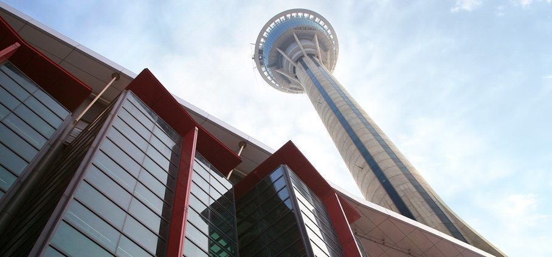
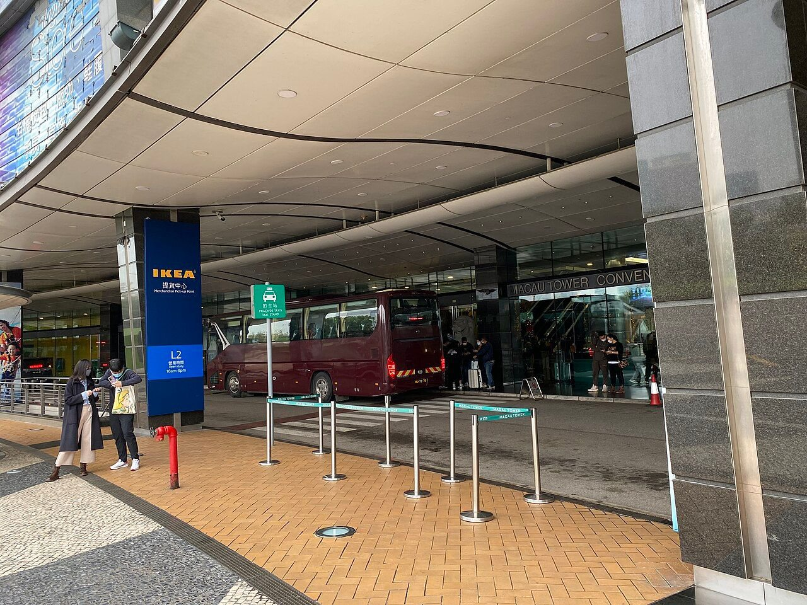
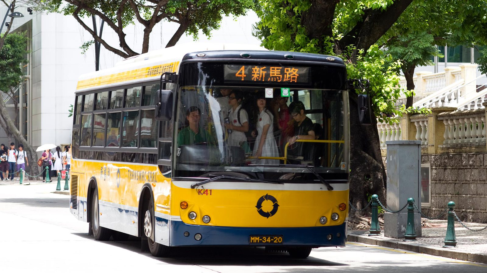
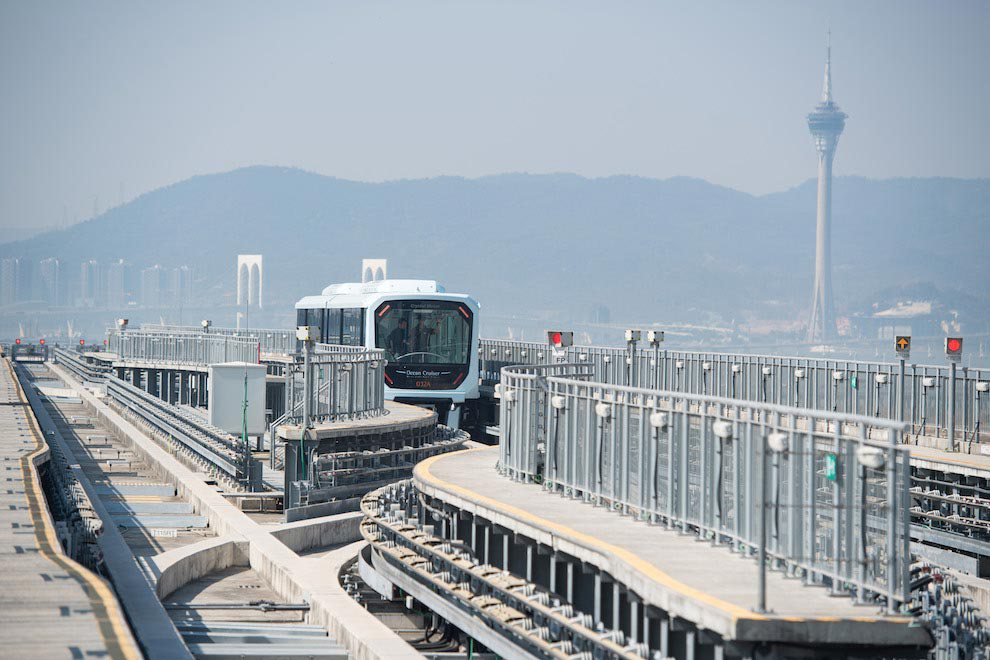

02交通指南 · ACCESS
清晨怎么到
清晨首班公交未必赶得上日出，优先打车、酒店接驳，或直接住塔附近。地址：澳门观光塔前地，公交站「澳门旅游塔」（M177）。
住塔附近（推荐）
西湾湖、妈阁、新口岸一带的酒店，步行或打车 5–15 分钟就能到塔底。入住时可以问前台要叫醒服务和清晨接驳。

出租车 / 网约车
的士车身黑色、车顶奶白：起表 MOP 21（首 1600 米），其后每 220 米加 MOP 2，行李每件 MOP 3。召车 +853 2828 3283；特别的士可致电 2881 2345 或用「澳门电召」App。半岛出发约 10 分钟。

首班巴士 / 轻轨
巴士每位 MOP 6，车上不设找零；9A、32、26 停「澳门旅游塔」（M177）。轻轨氹仔线可到妈阁站，首班与班次以轻轨官网时刻表为准；赶不上日出就改打车。


票价与电话按澳门旅游局 2026 年 6 月公开资料。观光层官网现时开放时间为 10:00–20:00，清晨场属试点方案，需运营方确认；首班车以运营方当日公告为准。